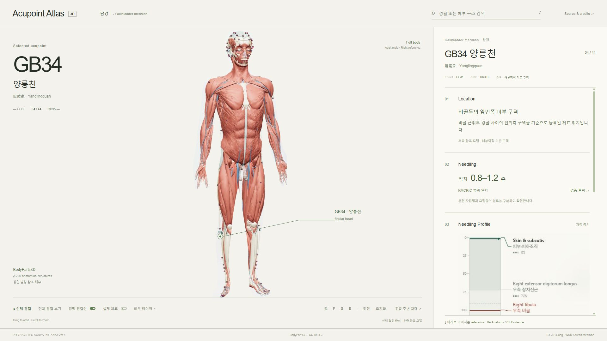

GB34 · 양릉천
Needling Profile
Needle’s-eye Compass
이미지 위에서 깊이와 주변 위험 구조를 즉시 비교합니다.
앞 ↑ · 가쪽 → · 모델 기준 비척도
신경동맥
이미지 위에서 깊이와 주변 위험 구조를 즉시 비교합니다.
앞 ↑ · 가쪽 → · 모델 기준 비척도
피부·피하조직 / 앞정강근 / 뼈사이막
주변 구조와 해부학적 경계를 순서대로 확인합니다.
자침 원문 · 모델 검수 · 출처

陽陵泉 · Yanglingquan · 위치 등록 · 경로 공개
양릉천
비골두의 앞면쪽 피부 구역
비골두 외부·경골 사이의 전외측 구역을 기준으로 등록된 체표 위치입니다.
직자 0.8–1.2촌
문헌 범위 · 모델 비례 환산 · 검증 출처